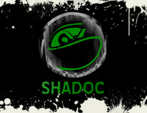
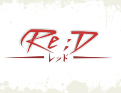
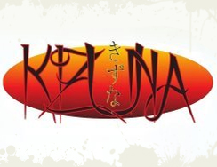
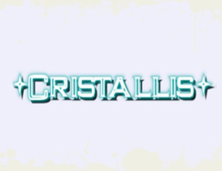

| |
|
|  |
SHADOC
|
|
Saia
do Óbvio!
Banda de JMusic (Japanese Music) de Salvador/Bahia.
Tem como compromisso divulgar todo tipo de música
japonesa, desde as músicas tradicionais às
atuais famosas trilhas sonoras de anime e Tokusatsus,
Jrock e Jpop, sempre com novos arranjos e novos sentimentos
às músicas que toca.
Comunidade
no Orkut: AQUI!
|
|
|
|  |
| Re;D |
|
A
principal característica da Re; D é a
influencia sonora das bandas de rock japonesas, principalmente
do som simples e melódico das bandas de Visual
Kei. O visual kei é um estilo de rock que foi
criado nos meados da década de 80 e consolidando-se
na década de 90. O repertório, por enquanto
se baseia em covers das bandas japonesas, com objetivo
de divulgar o estilo, e servindo como um alicerce para
que as pessoas conheçam este estilo diferente.
Comunidade
no Orkut: AQUI! |
|
|
|  |
| Kizuna |
|
Kizuna
significa laços "fortes" de amizade,
a banda foi formada por um grupo de amigos no intuito
de difundir no cenário Soterapolitano o J-rock
na sua forma mais natural possível .
Buscando inspiração em bandas como Gazette,
Antique Cafe, Dir en Grey, Moi Dix Mois, Malice Mizer,
Maximum The Hormone, X Japan, High and Mighty Color,
Flow, traz um som nem tão pesado e nem tão
melódico, um som PRÓPRIO, com muita qualidade
e responsabilidade.
Comunidade
no Orkut: AQUI! |
|
|
|  |
| Cristallis |
|
A banda CRISTALLIS, que toca músicas COVER de
JRock (japanese rock), e tem como base de suas influências
a originalidade do estilo, passando pelas bandas indies
até as bandas mais famosas.
A banda tem como objetivo divulgar e proporcionar aos
fãs a oportunidade de escutar músicas
de seus artistas japoneses favoritos.
Esperamos que todos possam apreciar o trabalho desta
banda.
Comunidade no Orkut:
AQUI!
|
|
|
|